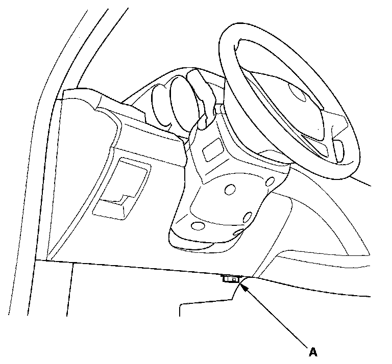
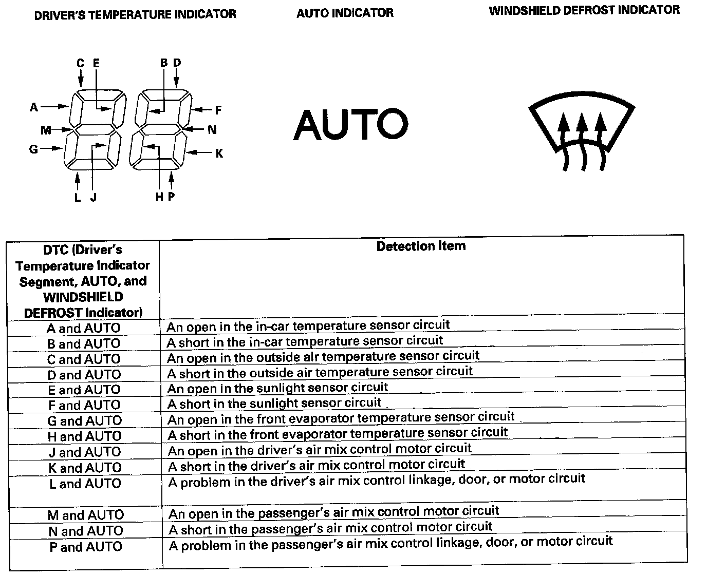
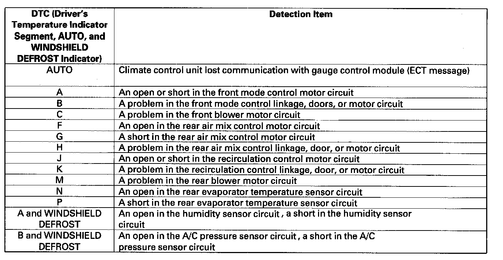
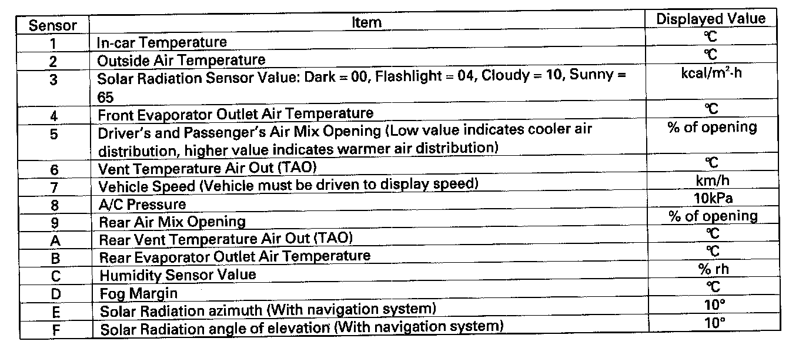
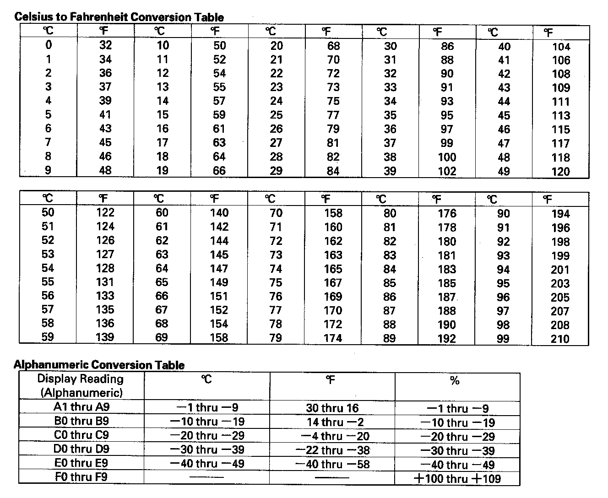

Without Scan Tool
General Troubleshooting InformationHow to Check for DTCs with the HDS
1. Make sure the ignition switch is OFF.

2. Connect the HDS to the data link connector (DLC) (A) located under the driver's side of the dashboard.
3. Turn the ignition switch ON (II).
4. Make sure the HDS communicates with the vehicle and the climate control unit. If it doesn't, troubleshoot the DLC circuit.
5. Select HVAC/CLIMATE CONTROL in the BODY ELECTRICAL menu.
6. Select DTCs in the HVAC/CLIMATE CONTROL menu.
7. Check for DTCs. If any DTCs are indicated, write down the DTCs, then go to the indicated DTC troubleshooting. If no DTCs are indicated, refer to symptom troubleshooting Symptom Related Diagnostic Procedures.
NOTE:
- After troubleshooting, clear the DTCs with the HDS.
- For specific operations, refer to the user's manual that came with the HDS.
How to Use the Self-diagnostic Function with the HDS
1. Make sure the ignition switch is OFF.
2. Connect the HDS to the data link connector (DLC).
3. Turn the ignition switch ON (II).
4. Make sure the HDS communicates with the vehicle and the climate control unit. If it doesn't, troubleshoot the DLC circuit.
5. Select HVAC/CLIMATE CONTROL in the BODY ELECTRICAL menu.
6. Select INSPECTION in the HVAC/CLIMATE CONTROL menu.
7. Select CLIMATE CONTROL SELF TEST in the INSPECTION menu.
8. Check for DTCs. If any DTCs are indicated, write down the DTCs, then go to the indicated DTC troubleshooting.
NOTE:
- After troubleshooting, clear the DTCs with the HDS.
- For specific operations, refer to the user's manual that came with the HDS.
How to Use the Self-diagnostic Function without the HDS
The climate control unit has a self-diagnostic function. To run the self-diagnostic function, do the following:
1. Turn the ignition switch OFF and then ON (II).

2. Press and hold the OFF button, then press the RECIRCULATION CONTROL button five times within 10 seconds. Release the OFF and RECIRCULATION CONTROL buttons; then the self-diagnostic begins.
NOTE:
- The blower motor will run at various speeds regardless of what the panel is displaying.
- If there is any problem in the system, the system flashes "88 AUTO WINDSHIELD DEFROST' or alternately flashes "88 AUTO WINDSHIELD DEFROST" and one or more of the 14 segments (A through P). Refer to checking for DTCs.
- If there are no problems detected, the segments will not illuminate, and the system will appear to be turned off.
Canceling the Self-diagnostic Function
3. Turn the ignition switch OFF to cancel the self-diagnostic function. After completing repair work, run the self-diagnostic function again to make sure that there are no other DTCs.


Checking for DTCs
The temperature display indicates single or multiple DTCs. If indicator segments A, B, C, E, G, J, M, N, AUTO, and WINDSHIELD DEFROST are on at the same time, there may bean open in the common ground wire. If no DTCs are present, the indicator remains blank.
Displaying Sensor Inputs at the Climate Control Unit
The climate control unit has a mode that displays sensor inputs it receives. This mode shows you what the climate control unit is receiving from each of the sensors, one at a time, and it can help you determine if a sensor is faulty.
Check these items before using the sensor input display mode
1. Turn the ignition switch ON (II), and check the recirculation door function; press the recirculation button to switch from FRESH to RECIRC. The air volume and sound should change slightly.
2. Set the temperature control knob to the desired test temperature. When selecting the test temperature, note these items:
- "Lo" temperature setting will default to MAX COOL, VENT, and RECIRC.
- "Hi" temperature setting will default to MAX HOT, FLOOR, and FRESH.
- 58 through 86° F settings will use the automatic climate control logic.
3. Turn the ignition switch OFF.
To run the sensor input display mode, follow these steps
1. Turn the ignition switch OFF.
2. Press and hold both the AUTO and RECIRCULATION CONTROL buttons, then start the engine.
3. After the engine starts, release both buttons. The display panel control unit will flash the sensor number and then the value for that sensor. Record the value displayed.

4. To advance to the next sensor, press the REAR WINDOW DEFOGGER button.
NOTE:
- The sensor values will be displayed in degrees Celsius (°C) or an alphanumeric code. Use the chart to convert the value to degrees Fahrenheit (°F).
- If the sensor value displays "Er" this indicates there is an open or short in the circuit or sensor. Check for DTCs using the HDS, or refer to checking DTCs by DTC indication.
- If necessary, compare the sensor input display to a known-good vehicle under the same test conditions.
- If the sensor is out of the normal range, refer to the sensor test or substitute a known-good sensor, and recheck.

5. To cancel the sensor input display mode, press the AUTO button or turn the ignition switch OFF.